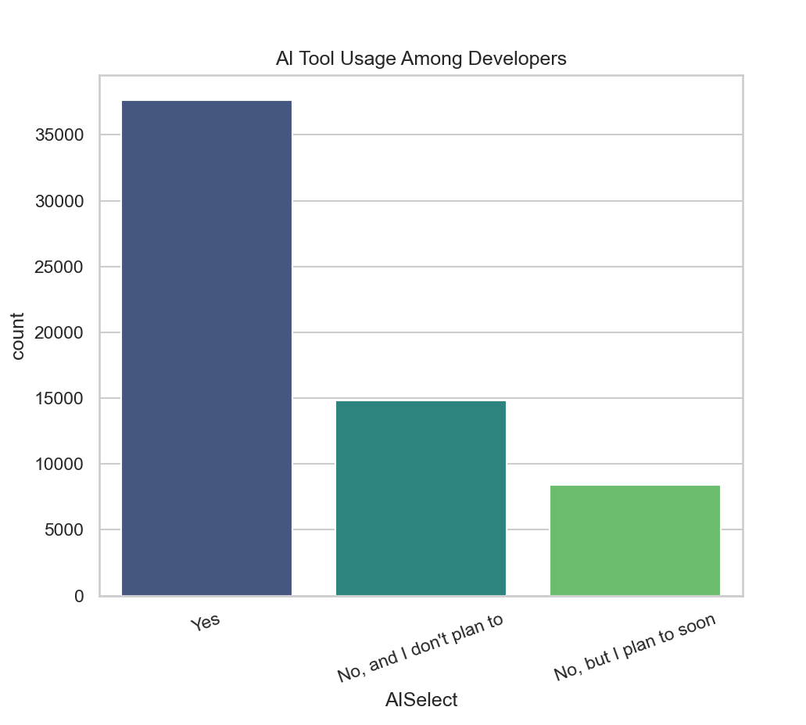
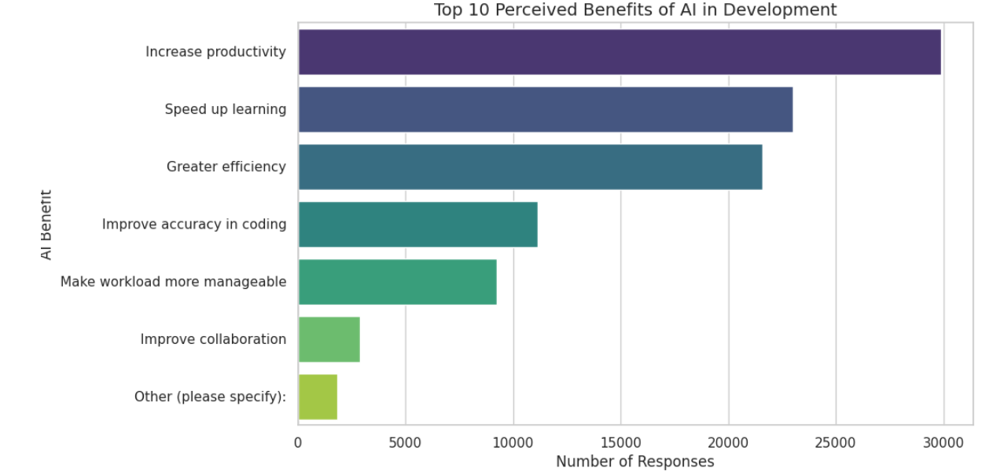
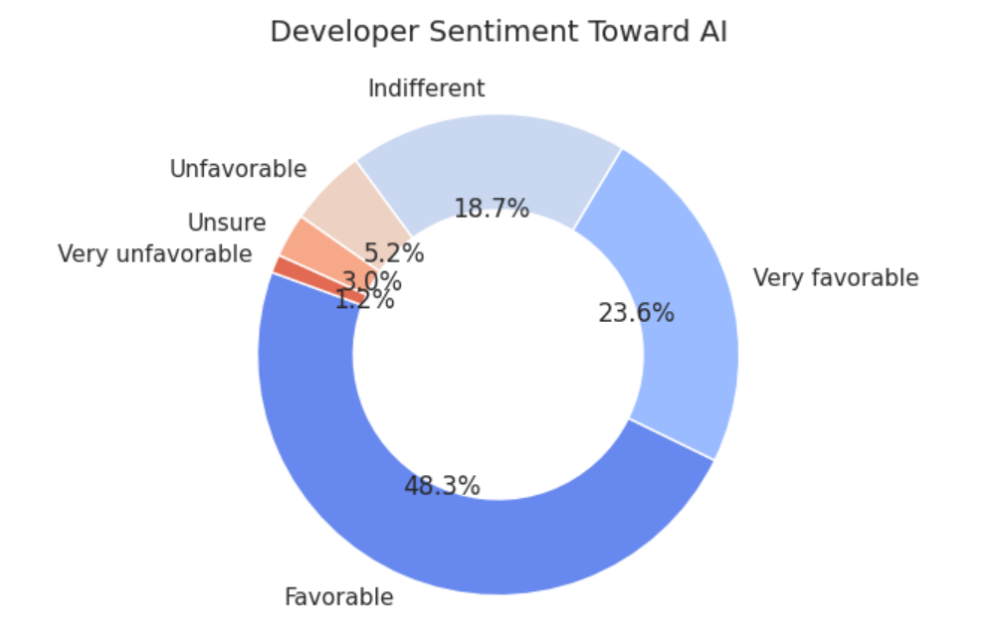

How AI-driven approach is perceived by developers
Artificial Intelligence is no longer a distant frontier—it’s embedded in the daily workflows of developers across the globe. But how do developers actually feel about AI? Are they embracing it as a productivity booster, or approaching it with caution? To explore this, I analyzed the 2023 Stack Overflow Developer Survey, focusing on responses related to AI tools, sentiments, perceived benefits, and future expectations.
Let’s dive into the findings and ask some critical questions along the way.
How Many Developers Are Actually Using AI?
To understand the current landscape of AI adoption, we looked at the responses to the question: “Are you currently using AI tools?” The results are telling:
- Yes — 37,662 developers
- No, and I don't plan to — 14,837 developers
- No, but I plan to — 8,408 developers

This breakdown reveals that over twice as many developers are already using AI tools compared to those who have no intention of adopting them. That’s a strong signal that AI is no longer experimental—it’s becoming mainstream.
But what’s even more interesting is the 8,000+ developers who are on the verge of adoption. This group represents a transitional mindset: curious, cautious, and likely waiting for better tools, clearer use cases, or more trust in AI systems.
Perceived Benefits of AI by Developers
Beyond the hype and headlines, we wanted to know:
What specific benefits do developers associate with AI tools?
To answer this, we analyzed the multiple-choice responses to the question about perceived benefits of AI. After cleaning and simplifying the data, we grouped responses into seven core categories:
- Productivity
- Efficiency
- Accuracy
- Workload management
- Collaboration
- Other

The resulting visualization paints a clear picture:
🟣 Productivity and Efficiency top the list, with developers overwhelmingly viewing AI as a way to get more done, faster. This aligns with the broader narrative that AI tools are streamlining repetitive tasks and accelerating development cycles.
📘 Learning and Accuracy also rank highly, suggesting that developers see AI not just as a time-saver, but as a mentor—helping them improve code quality and absorb new concepts more quickly.
📉 Interestingly, Collaboration and Workload management appear less frequently. This raises a compelling question:
Are current AI tools falling short in team-based environments, or are developers simply not leveraging them that way yet?
The “Other” category reminds us that AI’s impact is multifaceted—and still evolving. Some developers cited niche use cases, personal workflows, or ethical reflections that didn’t fit neatly into predefined categories.
Developer Sentiment Toward Artificial Intelligence

Nearly 72% of developers view AI favorably or very favorably, showing strong optimism toward its integration in development workflows. Only a small minority (about 6%) hold negative views, while 19% are indifferent.
These insights lead us to ponder:
Is AI really just a bubble, or is it fundamentally reshaping how developers work?
Also data is important here, what kind of data is being used to train these AI models? Is it diverse and inclusive enough to avoid biases?